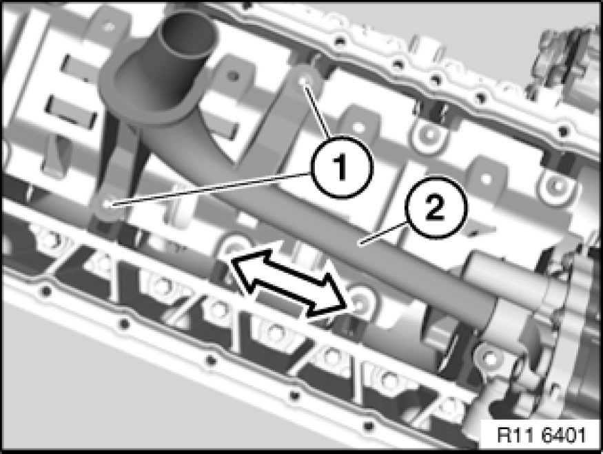
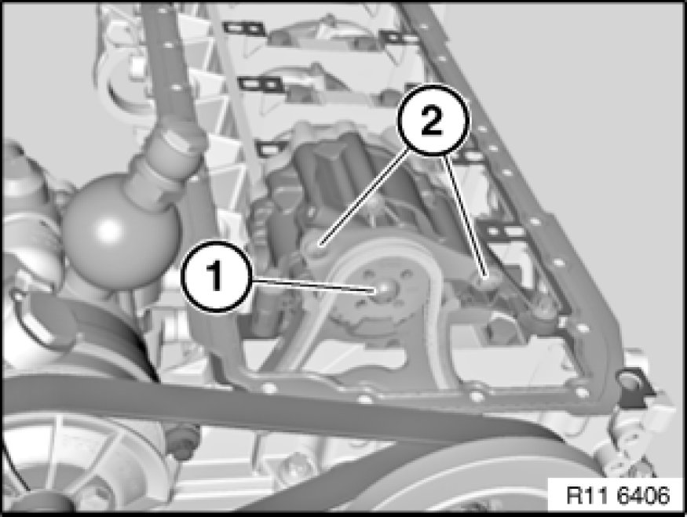
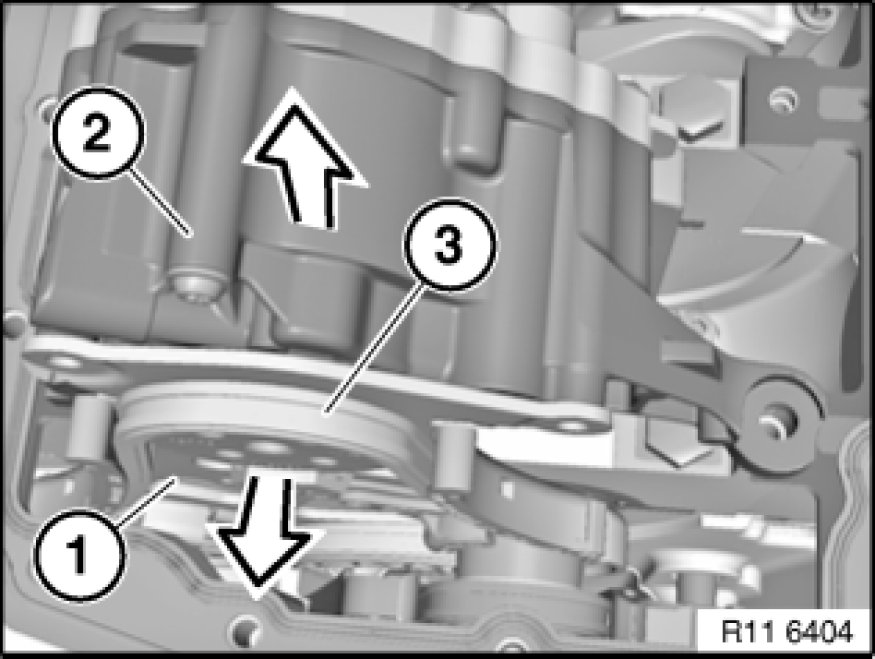
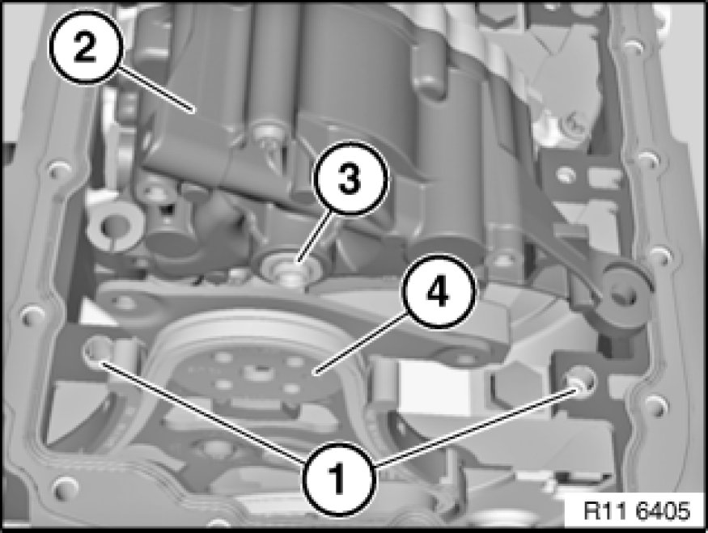

Removing and Installing/Replacing Oil Pump (N52K)
11 41 000 - Removing and installing/replacing oil pump (N52K)

Necessary preliminary tasks:
- Remove oil sump Service and Repair

Release screws (1).
Tightening torque 11 41 1AZ 11 41 Oil Pump with Strainer and Drive.
Installation:
Replace aluminium screws.
Remove intake pipe (2) in direction of arrow.
Installation:
Replace sealing ring.

Note:
To release bolt (1), insert a 6 mm drill bit between sprocket wheel and oil pump housing.
Release bolt (1).
Tightening torque 11 41 6AZ 11 41 Oil Pump with Strainer and Drive.
Release screws (2).
Tightening torque 11 41 5AZ 11 41 Oil Pump with Strainer and Drive.
Installation:
Replace aluminium screws.

Important!
Observe different screw lengths.
Release screws (1).
Tightening torque 11 41 2AZ 11 41 Oil Pump with Strainer and Drive.
Tightening torque 11 41 3AZ 11 41 Oil Pump with Strainer and Drive.
Installation:
Replace aluminium screws.

Detach sprocket wheel (1) in direction of arrow.
Note:
Chain tensioner presses timing chain (3) upwards.
Do not remove sprocket wheel (1).
Remove oil pump (2) in direction of arrow.

Installation:
Check spacers (1) for secure seating and damage; replace if necessary.
Align twin surface (3) on oil pump (2) to sprocket wheel (4).
Install oil pump (2).

Assemble engine.